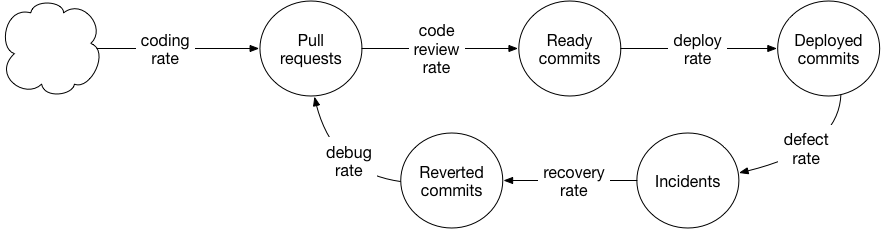

Fools! Stop Mysticizing System Dynamics
by Richard Marmorstein - September 22, 2022
← More Posts
ccasionally, my Twitter feed sends to me a writer arguing via queueing theory, stock and flow diagrams, equations, or even simulations to advance their ideas of how software teams should operate. These are the tools of system dynamics.
I think this style of argument appeals to engineers because we like to build things. System dynamics lets you argue by building a model. Some very thoughtful writing happens in this style. It’s explicit and engaging. It can even be visual or interactive. Despite my overblown, attention-grabbing title, I like reading arguments in this style.
But I have two objections: first, I think system dynamics models are given more authority than they deserve. A system dynamics model is just an analogy dressed up in a bit of formalism. Like any analogy, you should only give it force if the stories it tells are plausible in light of your experience and knowledge.
Second, I think system dynamics mechanizes software teams too much: they model software teams as mechanical phenomena that obey equations and universal laws – not collections of humans, unpredictable and unique. This suggests a vision of software leader as maximizer: leadership is cast as a type of engineering, it is ultimately about designing systems and organizing processes to maximize throughput. I find this deficient.
To illustrate, I’ll proceed through three examples of “system dynamics gone wrong” from blogs or books I’ve read.
Example: Stock and Flow Diagrams
Let’s start with a post by Will Larson. Will Larson is the author of An Elegant Puzzle, a treasury of thoughtful advice for software leaders. I recommend it. Larson writes sometimes about “systems thinking”, and is particularly fond of stock and flow diagrams. In this particular post, he draws this diagram

and then argues
If your model is a good one, opportunities for improvement should be immediately obvious, which I believe is true in this case. However, to truly identify where to invest, you need to identify the true values of these stocks and flows! For example, if you don’t have a backlog of ready commits, then speeding up your deploy rate may not be valuable.
The first time I read this post, I went googly-eyed at the diagram and nodded along to the analysis. But something is clearly wrong. Imagine you are a solo developer, and deploys take an hour. You won’t build up a backlog of commits. Does this mean speeding up deploys to 1 minute is valueless? That’s crazy talk! Speed up your deploys and you have gained a super power: the ability to interactively ask questions of your production environment, e.g. add a quick log statement to get a sample of the values a variable has under production traffic.
The stock and flow diagram says nothing about this superpower. To the diagram, the only value of deploys is that they convert the stock of ready commits to the stock of deployed commits. It has nothing to say about developer workflows, time-sensitive information, or the concept of interactivity.
Stock and flow models have this deceptive veneer of flexibility: you can model virtually everything with them, it seems: you need only think of it as something that accumulates. But this is the limitation – the only aspect of your system a stocks and flows model can capture is the accumulation aspect. This is why you can’t really use a stocks and flows diagram to tell the story about fast deploys making production logs more interactive. This is a story about time-sensitive information and temporary developer mental states - these things don’t really accumulate into a stockpile. You could press on, perhaps, and attempt to model stocks of “unanswered questions” flowing into “answered questions”, but this is still unsatisfactory. Unanswered questions don’t stockpile across individuals, and you would only hold one or two unanswered questions in your head at a time; you would abandon it or find another way to answer it, rather than let it stockpile.
Models don’t need to completely realistic or capture every aspect of a system to be useful. But you’re supposed to be explicit about their limitations and have their shortcomings at the front of your mind when you apply a model. My experience: I’ve read almost nothing critical of stock and flow models. Their shortcomings are never discussed. They are praised universally as a useful tool for leaders no reason about complicated systems. I attribute this to that deceptive veneer of flexibility I mentioned. They seem much more flexible than they are. You can pick virtually any object and tell a story about it with a stock and flow diagram. But you can’t pick an object and tell any story about it, you are actually very limited about the types of stories that you can tell. And these won’t always be the stories that best describe the important behavior of the system.
I also worry that, an eagerness to apply stock and flow modelling can bias your perception of which questions are important in favor of those that are more amenable to the approach. This isn’t quite the law of the hammer i.e. “if you’ve got a hammer, everything looks like a nail”. Perhaps it is the hammer’s second law: “if you’ve got a hammer, you’ll overlook screws in your quest to find nails.”
The questions most suited to analysis via stock and flow diagrams are questions of project management and organizational design. These problems do come up, and they are important: it’s nice to work in an organization with thoughtful and smooth bureaucracy. But at least in my philosophy of engineering leadership1, these concerns are very secondary. I don’t want my manager’s manager and their manager to spend all their energy fiddling with the details of the reporting structure, review processes, or making sure all the teams use Jira in exactly the right way. I would rather they focus on developing culture, i.e. here is a list of things I think matter much more in a software team than smooth bureaucracy:
- psychological safety
- deep understanding of the customer
- compelling product narratives
- positive team sentiment
- belief in the organization’s mission
- well-framed ideas
- pride of workmanship
- interactive tools
These things, I believe, are not really subject to stock and flow analysis. So I fear that the claim “stock and flow diagrams are an important tool for software leaders” can implicitly act as a claim that tweaking systems and improving bureaucracy is more important than focusing directly on human interaction and improving culture.
The Theory of Constraints
I occasionally see software writers mention “The Theory of Constraints”. This comes from a book “The Goal”, a work of fiction about a manufacturing plant, which I haven’t read, but I have read “The Phoenix Project”, which I understand is a knock-off of “The Goal” but in a software setting. It’s a novel, where the authors invent a fictional dysfunctional company that is only able to fix its problems by applying the particular techniques the author wishes to advance.
I recommend it. Criticism aside, it’s entertaining and fairly thought-provoking.
The central idea of “The Theory of Constraints” is that the output of your system is limited by a single constraint. In a manufacturing plant, this might be a critical piece of machinery. In “The Pheonix Project” it is a hero engineer named “Brent” who is involved in way too many projects and has amassed way too much institutional knowledge. To improve the system, leaders must singularly focus on the constraint. Improving something that doesn’t affect the constraint won’t actually increase output, because the constraint is the limit.
In “The Pheonix Project”, the theory of constraints feels very mystical. It is among “The Three Ways” laconically revealed by this wise guru character. A mystical attitude towards system dynamics ideas is exactly what I’m out to attack in this post, so let’s dive in.
I do believe that some systems are limited by a single constraint. I’ve never worked in manufacturing, but I can see how, in an assembly line, the performance of one specialized machine could be the bottleneck for the whole system. I can also believe that the incredibly contrived IT organization in “The Pheonix Project” could have this property - it was specifically written to be that way.
But some systems are clearly not like this. For example: markets. If you want to increase the output of a market economy, you don’t need to “identify the constraint” and make improvements only there. You can improve output anywhere. Find a huge deposit of iron ore. Have a bumper crop of bananas. It doesn’t matter whether or not bananas or iron are the economy’s “constraint” or not. There is no single constraint. Sell your iron, sell your bananas. Supply increases. Prices go down. Firms adjust their production plans to take into account the lower price and increased abundance of iron or bananas, and output goes up.
Markets don’t have a single constraint because goods can substitute for each other, and consumers and firms can coordinate through the price mechanism. I can have chicken for dinner if beef is too expensive. I can design my building around concrete beams if steel beams are too expensive.
Manufacturing plants (as far as I imagine) don’t feature this level of substitutability. If the laser cutter is too busy, you can’t just use the molding machine instead. The equipment is highly specialized.
So the question is, are software teams more like manufacturing plants or more like markets? I think it really depends on culture. You can have highly specialized teams, “the database team”, “the cloud team”, etc. and a bottleneck can build up in front of “the database team” just like a bottleneck could build up in front of the laser cutter.
Or, you can have a culture where you have “product” teams, who own and are responsible for driving all aspects of their projects end-to-end, and “platform teams” whose mandate is not to undertake the database work, the cloud work, etc. of particular projects, but is to provide and support a set of tools so that it is easy for product teams to undertake this work themselves. This sort of environment is very unlikely to be subject to a single constraint.
Or you can be an early-stage start-up where everybody just does everything.
Maybe I’m obtuse, and this was the point all along of “The Pheonix Project”. You apply the theory of constraints to a dysfunctional organization until the theory doesn’t apply anymore and the end result is a well-platformed engineering organization with autonomous teams. But as I read them, advocates of The Theory of Constraints seem to think it always applies. The business of leaders is always to optimize the system dynamics problem and single-mindedly focus on clearing bottlenecks at “the constraint”.
I don’t like this. Engineering leaders, in my view, are gardeners, not bottleneck-clearers. As I wrote above, the priority of leaders should be culture - psychological safety, pride of workmanship, compelling narratives, and such. The Theory of Constraints is an attempt to turn leadership back into an engineering problem. I see the appeal, so many of our managers in this industry were originally engineers. But it’s wrong.
Queuing Theory
The last example I’ll discuss is the popular blog post “Work is Work” by Coda Hale.
Why do features take longer to ship as an organization grows, asks Hale. His story:
- “Work capacity” only grows linearly as you hire more engineers, but
- “Contention costs grow superlinearly” (for shared resources); and
- “Coherence costs grow quadratically” (i.e. communication costs2).
Furthermore, we know that this is the True Story of the slower pace at larger organizations. Stories about tech stack, talent level, or project management are “emic” and therefore “crap”, whereas a queueing theory explanation is “etic” and therefore “a priori truth”. Hale is very explicit about expecting you to grant special authority to the system dynamics analogy.
Let’s not be hypnotized by fancy equations, and check our experience and intuitions. Is this story actually plausible? Over the last decade or so, the company I work for3 grew from dozens to thousands of engineers. If tomorrow they decided to fire all the engineers except for me, this would eliminate contention costs and coherence costs. I wouldn’t have to contend with anybody for the QA environment. I wouldn’t need to communicate with anybody, either. Would I suddenly be able to ship my assigned feature as fast as I could have back in 2012?
It would be nice to clear my calendar a bit. And it would be nice not to risk merge conflicts or code review disputes. But will this change the game? No.
Hale’s story misses that the slower pace at large organizations is less about the growing size of the team and more about the growing size and complexity of the codebase and the product. CI takes 30 minutes to run when it used to take 3? Fire everybody, and it’ll still take 30 minutes to run. Database migration takes days when it used to take minutes? Fire everybody, it’ll still take days.
Features are also simply more complicated for a mature software product. I’ve written before about two types of features: some features involve adding new behavior, but many features add new constraints on existing and future behavior. That is, in the early days of your product, if you want to add a “star ratings” feature, you just add the star ratings feature. In the later days of your product, you add the star ratings feature, you make sure it logs its activity properly for the “activity history” feature, you make sure it writes the data in such a way that the GDPR purger can clear it, you make sure that all text it displays goes through the internationalization system, you make sure that you’ve described the UI stylings for both light mode and dark mode, you make sure you are emitting events for monitoring and analytics. This has nothing to do with the size of the team. Fire everybody, and you still have to do all this work in order to have a correctly-implemented feature that preserves the invariants that users expect of your system.
Hale’s advice is * “building high-performing organizations requires a careful and continuous search for shared resources, and developing explicit strategies for mitigating their impact on performance” * “limit the number of people an individual needs to talk to in order to do their job to a constant factor”
This isn’t bad advice. I agree with it. I hate contending for shared resources and bureaucratic processes that require me to talk to a bunch of people. Managing these as an organization grows is necessary to remain productive, but far from sufficient. Resource contention and coherence costs are merely side characters: the arch-villain is complexity. This is obscured if you suspend disbelief, get hypnotized by fancy equations into believing a poor analogy between software teams and parallel processes. But it is immediately clear if you are an engineer at a large organization and take a simple moment to reflect on how your time is actually distributed.
Despite vastly overstating the persuasive power of system dynamics, Hale does an admirable job combatting its tendency to mechanize the practice of software leadership. He writes
That we know some of the boundaries of organizational performance and their dynamics doesn’t excuse us from using our empathy to build humane organizations. Companies are groups of people being compensated for having to spend some of their finite lifetimes not being with their partners, children, pets, or super weird hobbies. They deserve to be members of organizations which honor that time by ensuring that their work has value and meaning. There is no mathematical model to guide us to that goal.
A beautiful sentiment, and a fine way to end the post. Go in peace!
Disclaimer: I have a lot of opinions about how software organizations should be led, but I am not a manager, so add some grains of salt, to taste. I am a line engineer. I did have a small team of reports, once. The way I see it, though, is that these management types have all sorts of opinions about the right way for me to do my job. I’m entitled to my share of opinions about how they should do theirs. After all, we line engineers are the ones who feel the impact.↩︎
This is similar to the famous argument from “The Mythical Man Month” by Fred Brooks, as Wikipedia summarizes
Assigning more programmers to a project running behind schedule will make it even later. This is because the time required for the new programmers to learn about the project and the increased communication overhead will consume an ever-increasing quantity of the calendar time available. When n people have to communicate among themselves, as n increases, their output decreases and when it becomes negative the project is delayed further with every person added.
The difference is that Brooks is writing about adding engineers to a project whereas Hale is describing adding engineers to an organization.↩︎
Fun fact: Hale worked for the same company half a decade before me.↩︎